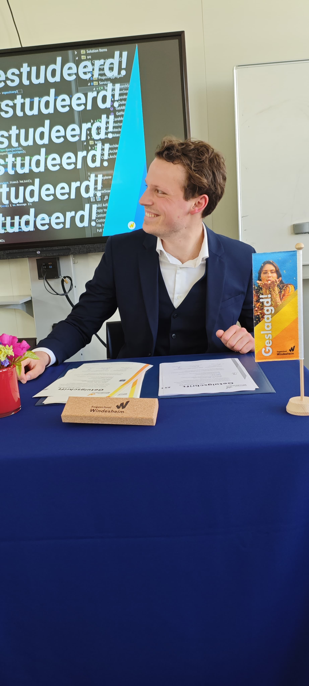

AI Working StudentNow
Stolwijk Kennisnetwerk (TLA Advies)
- Driving internal AI development and adoption across the organisation.
- Translating AI possibilities into practical use cases for advisors.
MSc Information Sciences — graduated 2026
I'm Jesse van den Hoven. I translate what an organisation actually needs into systems, architecture and processes that hold up in practice — from hospital ERP to AI adoption inside a professional-services firm.

Profile
My route through IT went from MBO to HBO to university — IT Administrator, then a bachelor in Business IT & Management, and now a master's in Information Sciences on the Aligning Business and IT track at Radboud University. That path is the point: I've been on the service desk, in application management, and in the strategy conversation, so I know what breaks between them.
I graduated in 2026 with a thesis carried out at Gemeente Nijmegen. Alongside my studies I taught Requirements Engineering & Design at Radboud, and I currently help Stolwijk Kennisnetwerk move their internal AI work forward.
The interesting problems are never purely technical. They're where a process, a system and a group of people meet — and nobody owns the whole picture.
Track record
Stolwijk Kennisnetwerk (TLA Advies)
Radboud University
Canisius Wilhelmina Ziekenhuis (CWZ)
Shared Service Centrum Ons
Hogeschool Windesheim
Radboud University
Radboud University
Universidad de Zaragoza, Spain
Hogeschool Windesheim
ROC Midden Nederland
Expertise
Four areas where my academic track and my hands-on work overlap.
Mapping what the organisation wants onto what the systems can actually do — the core of my master's track and my daily work.
Finding where AI genuinely helps a professional-services firm, and where it's a distraction. Adoption, not demos.
Keeping business-critical systems running and understood — from hospital ERP to service-desk process improvement.
Board work, student coaching and teaching at university level. Getting a group to a decision is its own skill.
Contact
Open to roles on the seam between business and IT — business analysis, information management, consultancy, or anything where those two need a translator.